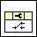
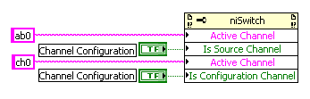
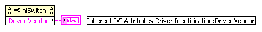

|  |
获取（读取）和/或设置（写入）NI-SWITCH 驱动程序的属性。有关 NI-SWITCH 属性的完整列表，请参阅NI-SWITCH 属性。
一些 NI-SWITCH 属性基于通道或应用于特定通道。当属性基于通道时，您必须在设置或获取属性之前指定活动通道。在以下示例中，ab0 设置为源通道，ch0 设置为配置通道。这两个属性都是基于通道的。
|  |
要设置或获取不基于通道的 NI-SWITCH 属性，您无需指定活动通道。以下示例显示了用于获取Driver Vendor属性值的属性节点。
|  |